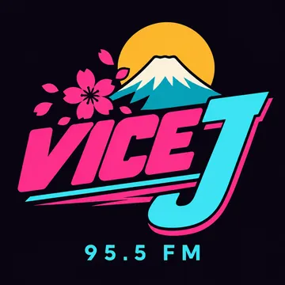
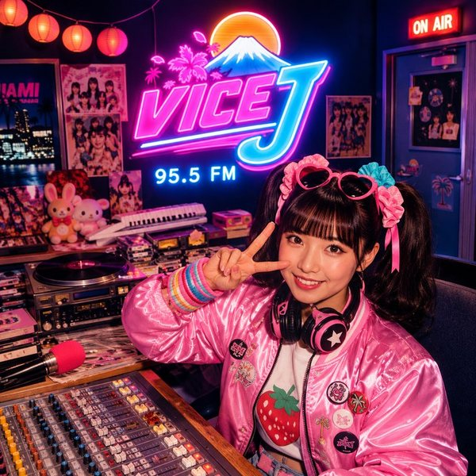

VICE J
95.5, everything is kawaii. Even the traffic jams.
with Sakura


The station's story
The demonstration room that became a horizon
DOWNTOWN · 252 FRONT STREET
First floor of a former radio-cassette import showroom; pink VICE J letters on frosted glass, window facing Front Street with the east bridge in the distance. Terrace roof with visible waterproofing strips; straight aerial, repainted base and cable in an ivory protective sleeve.
At 252 Front Street, cartons came before songs. The building housed a radio-cassette import counter; upstairs, a demonstration room contained six sockets and one chair facing the bay. Customers could compare loudspeakers while watching the east bridge, whose immobility offered an excellent basis for comparison. In March 1984, deliveries still crowded the landing. One partition retains their pencilled height marks, measured in boxes rather than centimetres. The room smelled of new cardboard, packing foam and cables freshly removed from their bags. Nobody had yet worked out how to put a price on the view.
Vice J began in that room in autumn 1984, when people started anticipating demonstrations more eagerly than the equipment. The sales counter retreated downstairs; a console replaced the row of tape decks and record sleeves filled the manual drawers. A returned demonstration cassette with a precisely timed running order established the station’s method: prepare carefully, then let the music open the windows. Old “test” labels stayed on unused controls. Sakura’s temporary locker joined the permanent fittings without anyone having to settle the question of its name. The single demonstration chair remained available to listeners who arrived without an appointment.
Heat trapped behind frosted glass was the first enemy. Machines slowed down, the fan supplied its own percussion, and a foam delivery accidentally turned the entrance into an acoustic tunnel. Ventilation improved, the roof cable received protection, and two panels stayed to insulate the control room. In September 1985, the minute recorded at the east bridge became a special broadcast: sixty seconds of horns between two tracks, presented without shortening them. Listeners called to identify their cars. The station kept the call sheet, its first written proof that the surrounding soundscape also had an audience.
Today, the studio overlooks a ribbon of taxis, a piece of sky and the bridge still raised. Drawer fronts close with a gentle click; the Star Child introduction returns every three tracks. Warm paper scents the manuals that nobody throws away. The setting sun turns the frosted glass pink and makes the roof’s waterproofing strips shine gold. The demonstration chair remains in position, facing the bay: visitors may sit without buying a machine, and leaving with a song in their heads is now considered a perfectly satisfactory result for the counter.
- Manuals are sorted by size, songs by mood.
- An empty box reads “fragile: silence”.
- The chair retains its crossed-out price.
- The fan appears on a percussion specification sheet.
- The returns drawer holds postcards.
LITTLE STORIES
- Future Phone : Future Phone at 248 lends demonstration cables, labelled by the station before their return.
- Golden Pawn : Golden Pawn at 244 sets aside tape decks with their complete power supplies.
- Nightshift Finance : Nightshift Finance at 234 keeps a paper copy of the repair budget dry.
THE NEIGHBOURS
How to find it. At 252 Front Street, pass the window displaying old demonstration cartons. Climb to the first floor and the frosted glass bearing pink VICE J letters.
Who is Sakura ?
Sakura came for three months; her suitcase is still waiting for the right departure.
Sakura is 22 and comes from Osaka. She arrived in Vice Bay in March 1984 for a three-month placement with a radio-cassette importer and still has her return ticket. She keeps it with the now-historic bus 12 timetables.
She joins Vice J 95.5 after returning a demonstration tape with a perfectly timed running order. In her first week, she labels her locker “temporary”. In 1986, she carefully repaints the lettering.
She records bus delays in pink pencil and sends tapes to her cousin Ikki in Osaka. In September 1985, at the east bridge, she arranges a minute’s silence for the boat that never comes. She alone observes the full minute; her recording contains sixty seconds of horns.
- Her notebook compares bus 12 with Osaka trains, leaving many columns empty.
- Every letter leaves room for advice from Obaachan.
- During “Saku, Kawaii Pour Toujours”, she closes her microphone.
GOOD TO KNOW
« One more trip around the bay, then I’ll unpack. »
On air, between neighbours. She brings Marie a salted-butter onigiri to make her smile; Régis demands half.
The jingle (in French)
« VICE J, 95.5. Kawaii, ne ? »
Playlist
33 tracks, see the list
- Kira Kira Tomorrow · Sakura (OKALAM Studio)
- Saku, Kawaii Pour Toujours · Sakura (OKALAM Studio)
- Second Life with You · Oliea ft. Sonna
- Hīrō · Free'quency
- Those Days We Were Young · Oliea ft. Sam J
- Star Child (スターチャイルドの) · Estussy Studio
- Ao · Free'quency
- I Choose You · Oliea ft. Sonna
- Tell Me Something (教えてくれ) · Estussy Studio
- Take Me Out From The Sorrow · Oliea ft. Sam J
- My Love Never Die · Oliea
- Ashita no Hikari · Oliea ft. Sonna
- Neon Reverie (ネオンレヴェリー) · Estussy Studio
- 永遠の約束 (Eternal Promise) · Oliea
- 今日を抱きしめて (Embrace Today) · Oliea ft. Sonna
- Shining Star (輝く星) · Estussy Studio
- End of Summer with You · Oliea
- From the Ashes I Will Rise · Estussy Studio
- 美しい罪 (Beautiful Sin) · Oliea
- Unforgettable (忘れられない) · Estussy Studio
- Neon Fantasy (ネオンの空想) · Estussy Studio
- Moment of Love (愛の瞬間) · Estussy Studio
- Always Yours (いつもあなたの) · Estussy Studio
- You're The Reason (君が理由) · Estussy Studio
- To Be Honest (正直なところ) · Estussy Studio
- Dreams of a Starry City (星降る街の夢) · Estussy Studio
- Poem of a Solo Traveler (ひとり旅の詩) · Estussy Studio
- Next Girl (次のガール) · Estussy Studio
- Maze of Dawn (夜明けの迷路) · Estussy Studio
- Without You (あなたなしで) · Estussy Studio
- I'll Be With You (あなたと一緒にいます) · Estussy Studio
- Shadow Of You (影のあなた) · Estussy Studio
- Moonlit City (月明かりの街) · Estussy Studio
Waiting for GTA VI?
Verified news, countdown and guides on GTA VI France.